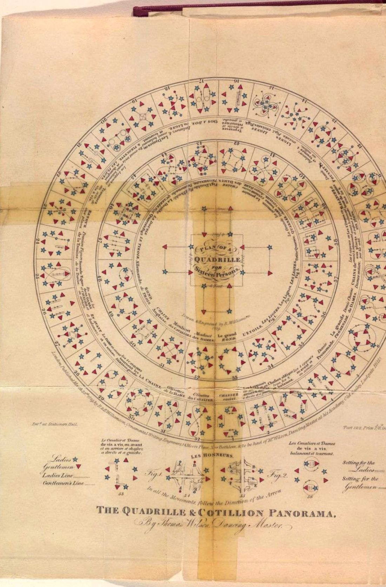
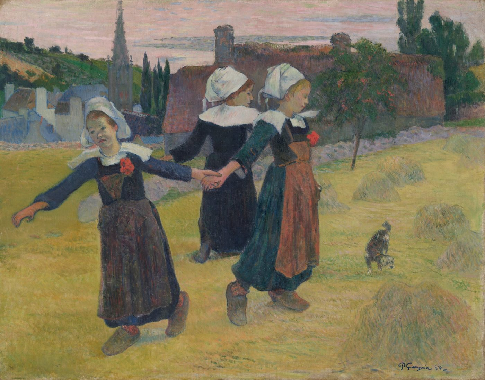
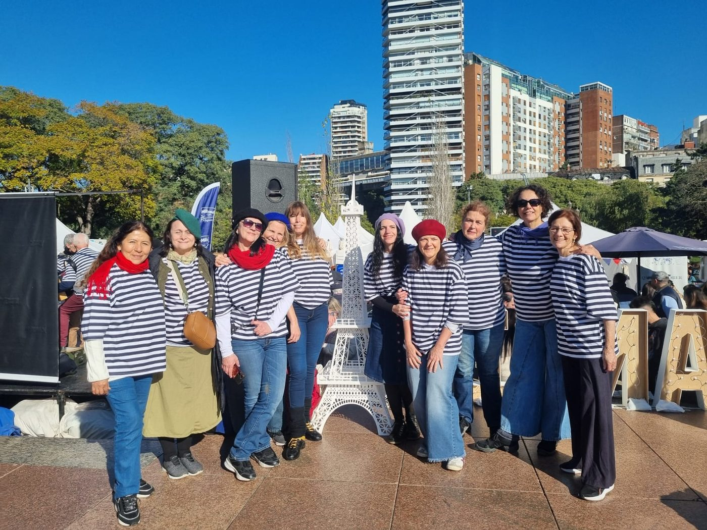

Aprender y enseñar
Fichas de danza, diagramas cinéticos, espectrogramas y partituras: las herramientas que usamos en clase, para aprender a tu ritmo o para enseñar.

01
Cada danza tiene su ficha: de dónde viene, cómo se forma la ronda o la pareja, su ritmo, sus pasos y sus variantes. Las fichas llevan siempre la fuente; cuando un dato no está confirmado, lo decimos.
02
Como los maestros de baile del siglo XIX dibujaban sus cuadrillas, nosotros dibujamos nuestras coreografías: cada bailarín es una ficha que se mueve sobre el plano, figura por figura, sincronizada con la música y el video.
Para escribir los movimientos también trabajamos con la notación Laban, el sistema de partituras de danza.
03
Bailar bien es primero escuchar. Con ondas y espectrogramas se ve dónde cae el tiempo fuerte, cuándo empieza una frase y cómo respira la melodía. Ejemplo: La gavotte des montagnes, tipo Dardoup.

04
Para quienes enseñan o quieren enseñar: cómo armar una clase, en qué orden presentar las danzas y cómo acompañar a un grupo que nunca bailó.
Sábados en Ramsay 2131, Buenos Aires. La clase de prueba es gratis.